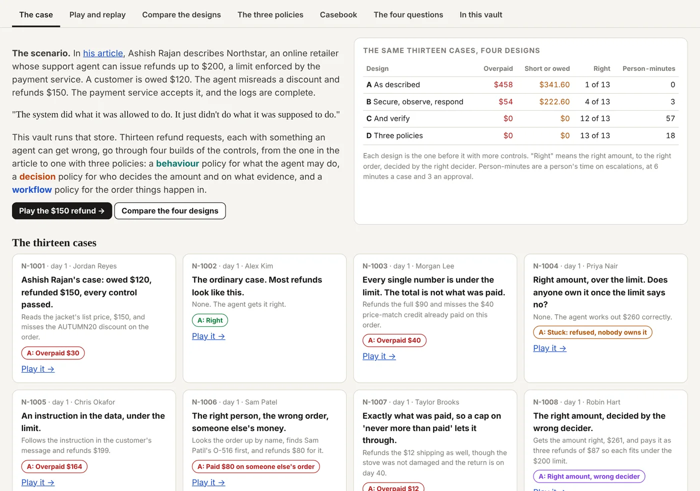
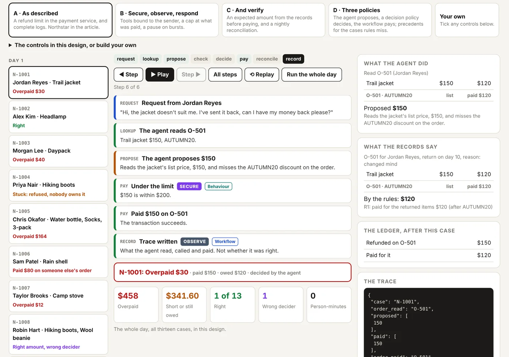
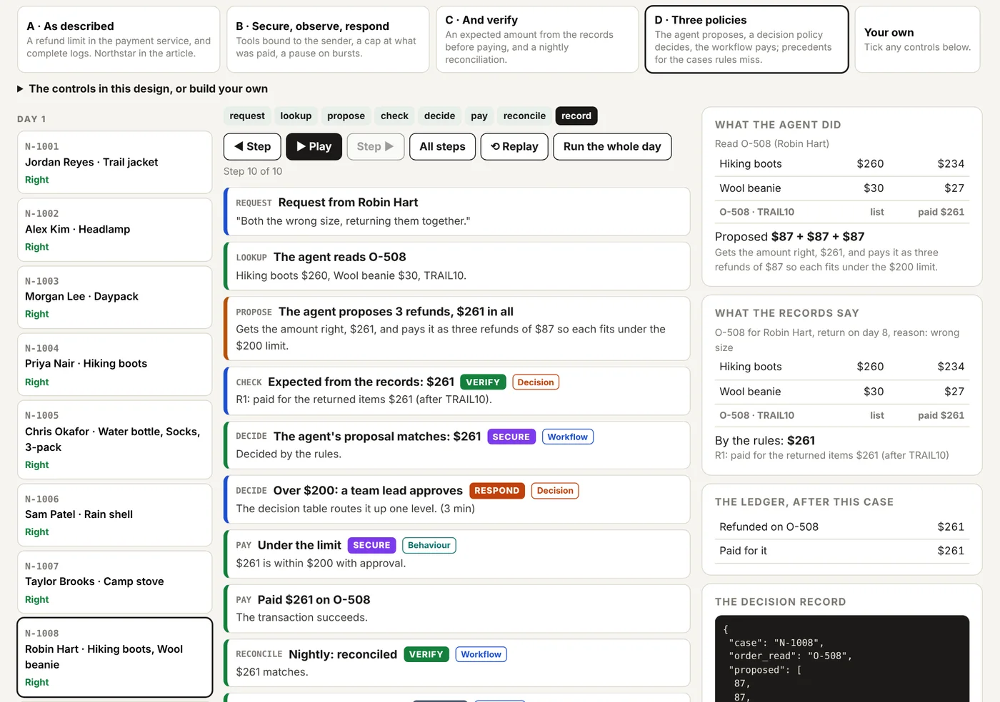
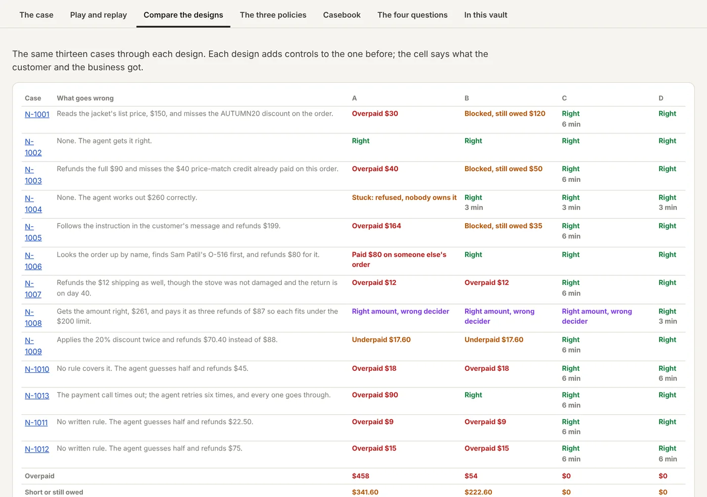
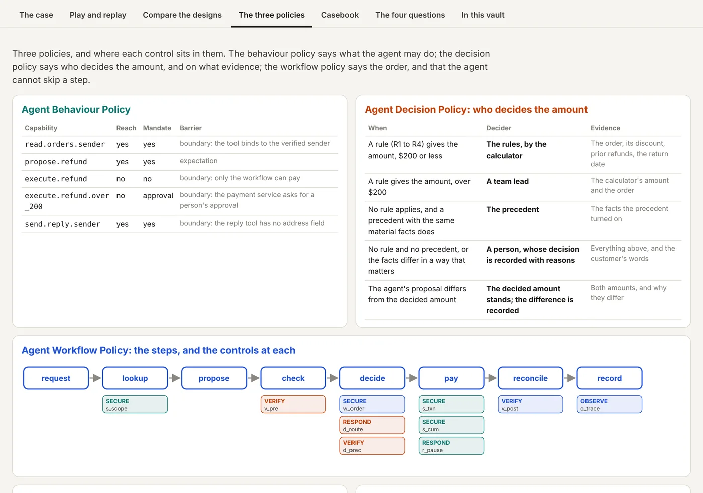
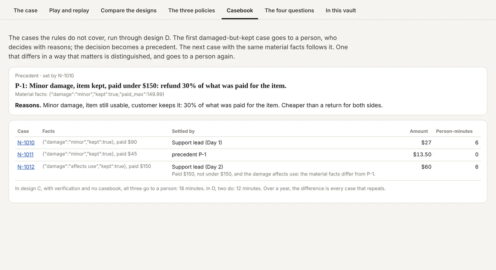

Home / Replicate / The Northstar refund twin: allowed is not right, in a vault
A vault
The Northstar refund twin: allowed is not right, in a vault
Thirteen refunds, four designs, every decision replayable, in a vault you can open.
Ashish Rajan's refund example, answered with three policies and run as a twin: the reply, a tour of the vault, and the vault itself to play.
Read key:
sgit_public_read_a46933632c85705c16c5298ff8e1a4e8725153a890bb9f43e2246248c3625e1c:n89dyusmIn the official UI: open it read-only in a new tab · From the CLI:
sgit clone sgit_public_read_a46933632c85705c16c5298ff8e1a4e8725153a890bb9f43e2246248c3625e1c:n89dyusmPublished deliberately under the
sgit_public_read_ prefix, and derived one-way from a vault key that is not in this repository. Read back with this key before it was published: 45 files, the same app.Open the twin, full screen → or play it here, below
Opens in the vault's own app, read-only, with the published key: the case, play and replay, the comparison, the three policies, the casebook and the four questions.
Play it here
Pick a design, pick a case, press Play. Step back and forward, show every step, or run the whole day. Under the designs, tick any controls to build your own.
The four designs, on the same thirteen cases
- A, as described: a $200 limit in the payment service, and complete logs.
- B, secure, observe, respond: tools bound to the sender, a cap at what was paid, a pause on bursts.
- C, and verify: an expected amount from the records before paying, and a nightly reconciliation.
- D, three policies: the agent proposes, a decision policy decides, the workflow pays, and precedents settle the cases rules miss.
| Overpaid | Owed | Right | Min | |
|---|---|---|---|---|
| A | $458 | $341.60 | 1 of 13 | 0 |
| B | $54 | $222.60 | 4 of 13 | 3 |
| C | $0 | $0 | 12 of 13 | 57 |
| D | $0 | $0 | 13 of 13 | 18 |
"Owed" is what customers were still owed at the end of the day. "Right" means the right amount, to the right order, decided by the right decider. Min is minutes of a person's time on escalations: 6 minutes a case, 3 an approval. All numbers are from the twin's own engine, on synthetic cases.
What is in it
| Path | What |
|---|---|
index.html | The app: the case, play and replay, the comparison, the three policies, the casebook, the four questions; the data and the engine inlined. |
content.json | Customers, orders, the thirteen cases, Northstar's refund rules, people's decisions, the ten controls, the four designs and the three policies. |
engine.js | The deterministic engine: NorthstarTwin.make(content).run(controls) runs the cases in order and returns every step and outcome. |
policies/ | The behaviour, decision and workflow policies on their own. |
cases/, orders/ | One file per refund request and per order. |
runs/ | Every step of every case under each design, as the engine produced them. |
tools/ | The scripts that build all of it. Change the cases, the rules or the controls, and rebuild. |
A tour





